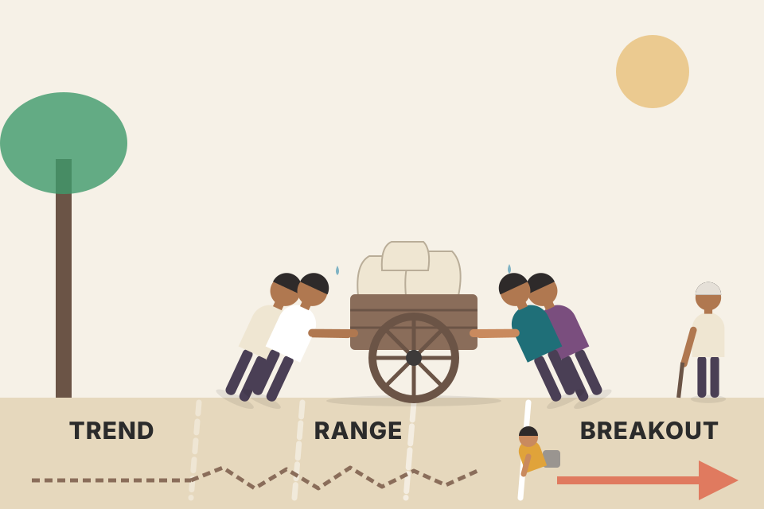
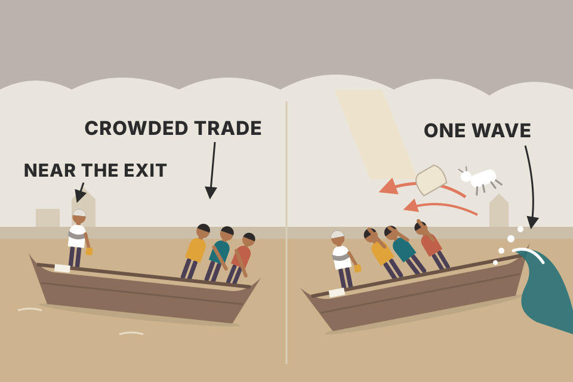
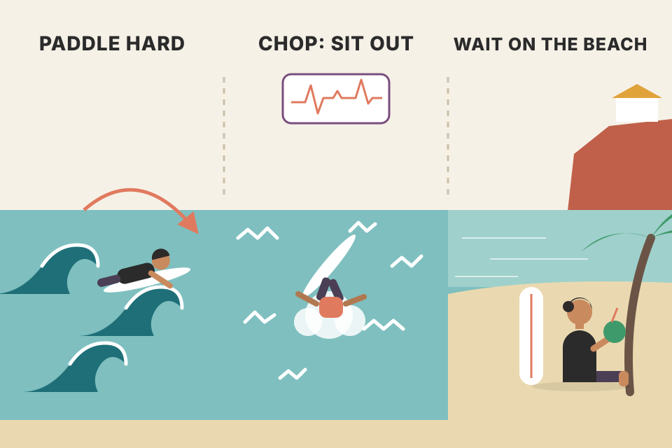
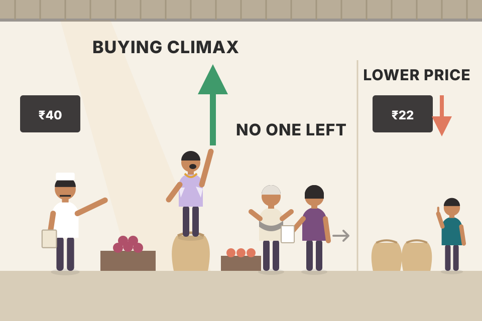

This module is about the hardest places on a chart: the bars where a trend stops and a range begins, or a range breaks into a trend. Below, every exercise and essay in the module is explained in plain words, in the book's order, with a live chart you can step through bar by bar. Every price on this page is simulated, built to show one idea. Roll a new market and check which lessons still hold.
Grimes sees a chart as two states and the borders between them. Everything in the module hangs off that picture.
The module has six numbered sections (the first three are chart exercises), then a set of short essays from Grimes' blog. This page follows that order: one plate per section or essay.
Grimes says this is the last module that looks at the market "from above", as whole structures, before later modules zoom in on single trade setups. It has five parts:
A river (trend) that flows into a lake (range) and later leaves it through a new river. Inside the river or in the middle of the lake the water is easy to read. The hard parts are the mouths, the shaded "interfaces": is this water slowing because the lake has started, or just an eddy in the river?
A trend means one side (buyers or sellers) is in control, so moves in one direction keep following each other. A range means the two sides are roughly balanced around a price. At an interface, control is changing hands. Both readings are briefly plausible, and that ambiguity is where both the best opportunities and the biggest risks sit.
These are among the most complicated and challenging parts of technical trading, and Grimes says they are worth the time: many of trading's opportunities, and its risks, sit where ranges become trends and trends become ranges. Each exercise chart has marked areas and questions. Answer them, then look for other readings of the same chart.
The exercise charts are daily candles with bands and a lower indicator pane: crude oil (2007–08), sugar (2009–10), the Dow (1939–40 and 1941–42), EUR/JPY (2015), Tesla (2016–17), soybeans (2016), cotton (2014), the Nasdaq (1999–2000), GBP/USD (2000 and 2004–05), EUR/USD (2014–15), Bear Stearns (2007–08), coffee (2014–15) and Exxon (2016). The ideas the questions teach:
The box starts at the trend's last extreme (like the arrow in Grimes' charts) and uses only the bars you can see. I use a simple rule that is mine, not the book's: a bar that pokes past the box edge but closes less than half an ATR beyond it is a probe, and the edge expands to that bar's extreme (dot = probe that closed back inside, i.e. price rejection). A close more than half an ATR beyond the edge counts as a breakout. ATR is the average daily range. Try "range, then the trend continues" a few times: resistance often expands two or three times before the break. Now look at "range that never forms": the box breaks almost at once, and the trend just continues.

Two teams pushing a heavy cart. In a trend, one team is clearly winning. When the winning team tires, the cart rocks back and forth (a range), and every time it rolls a little past the old line, the line in the dirt gets redrawn. You only know which team has won when the cart rolls well past a line and keeps going.
This section is one step closer to trading. It is a run of daily bars from one market. Grimes says the market and period were picked at random, not hand-picked, and he does not name the market. Each new chart picks up where the last one ended, and the older part is greyed out: the border between grey and white is where the hard right edge of the previous chart was. That way you see what the market did next.
The story his questions walk through: a downtrend breaks the low of recent support, extends to new lows and pauses (how hard was it to stay short?); price finds support, forms a short-term range whose bottom and top both hold for a while; the top fails into an uptrend; resistance levels form and get tested; the uptrend becomes clear but has few real swings (how do you judge its strength?); a sudden drop breaks it; real downward momentum appears; a new range forms; support is tested and breaks. At almost every stop he asks the same things: trend or range? Draw the trendlines and ranges. What is most likely next, what is the second most likely, how will you know early which one is playing out, and what happens if you are wrong?
Reading a mystery novel one page at a time with the next page covered. You must name a suspect now, using only the clues so far, and you only learn later whether you were right. Reading the whole book first and then "predicting" the ending teaches you nothing.
This market is simulated, so I can tell you afterwards what the simulator was doing (trend, range, shock) at each stretch, which the real world never does. The dashed lines are the last confirmed swing high and low at your hard right edge: a close above the upper one supports the "up" scenario, a close below the lower one the "down" scenario. That is Grimes' "what would confirm, what would contradict" turned into two prices. Scoring rule (mine): a net move of more than 2 ATR is up or down; anything smaller is sideways. Guessing at random scores about one in three.
Ten compressed charts with no commentary (Carnival, USD/ZAR, Netflix, AUD/USD, EUR/USD daily and intraday, wheat, gold, the S&P 500). Draw the trendlines following the module's rules (also in printed pp. 84–86 of Grimes' 2012 book The Art and Science of Technical Analysis). An uptrend line should:
Then note where trends turn into ranges and where ranges break back into trends, and do whatever other analysis you like. Many charts hold several trends, and different timeframes give different trend definitions. As long as each line follows the rules, it is valid. The charts mix easy and complex patterns.
How the page finds the correct line (my implementation of the three rules): find the trend's high, then the last swing low before it (B, rule 1). A swing low here is the lowest low of 5 bars on each side, so tiny dips don't count as swings. For every earlier bar A, the line A→B is valid only if no low between them sits under it (rule 3). The earliest A that passes is the one with the steepest slope up to B, so the line rests on the outer edge of the lows like a ruler laid against them (rule 2). The "broken" marker is the first close below the extended line after B.
Lay a ruler under the lows, pin it to the last dip before the top, then swing the other end back as far as it can go without cutting into any bar. Where it stops is your line.
tori_trendlines_explained.md: your coded trendlines join the last two 5-bar pivots. That is a different rule from Grimes' (it doesn't reach back as far as possible). Your tests found the Break setup worked on daily charts and the Bounce did not.Grimes warns that, done well, this is a big project, and worth it. The aim is to learn what happens as trendlines are drawn on a market that is still unfolding.
| Touch # | Bar | Line price | What happened to the right |
|---|
The method is mine, built to follow Grimes' instructions, with one simplification: each line simply joins the last two rising swing lows rather than using the full three-rule construction from plate 04. A swing low is a bar whose low is the lowest of 3 bars on each side, so you only know it is a swing low 3 bars later. Each time a higher swing low is confirmed, a line goes through it and the previous swing low. A touch is a bar whose low comes within a quarter ATR of the line. It held if price then rose 2 ATR above the touch bar's close before closing more than half an ATR under the line; otherwise it broke. Untick "real time" to start scoring from the pivot bar itself, as someone drawing on a finished chart would. Then press the pooled button and compare: that gap is the hindsight error Grimes warns about. On a random walk, the same rule gives the "no edge" baseline. Simulated data says nothing about real markets; the point is the method, which you can run on NSE charts.
tori_trendlines_explained.md).Still a valuable exercise. Module 1 described several ways to do it; the details don't matter, doing it does. Don't spend long on it: a few minutes every day (every day!), or a few minutes each hour if you trade intraday. It keeps you "in the flow" and builds a deep, intuitive feel for price action.
Copying a painting by hand teaches you more about brushwork than staring at it for an hour. Each bar you plot forces four small decisions: where it opened, how far it reached each way, and where it settled compared with yesterday.
On paper each bar is a vertical line from low to high, a tick on the left for the open and a tick on the right for the close. Plotting it yourself makes you notice things a screen lets you skip: an inside day, a close near the high after a gap down, a range twice yesterday's.
The workbook assigns these pages of Grimes' book The Art and Science of Technical Analysis: Market Structure, Price Action, and Trading Strategies (Wiley, 2012). They go deeper into transitions between trends and ranges, with more examples of correctly and incorrectly drawn trendlines. These are the book's printed page numbers. That book is not in your library; the PDF called "The Art and Science of Technical Analysis" is this workbook.
| Printed pages | Topic | On this page |
|---|---|---|
| 85–92 | Trendlines | plates 04–05 |
| 121–148 | Between trends and ranges | plates 02–03 |
| 189–212 | Indicators and tools for confirmation | plates 08–09, 15 |
| 31–48 | Market cycles and the four trades | plate 11 |
This essay is about how trends end, because knowing that helps you manage risk, place stops and trade the trend. Crude oil is the example of a dangerous ending to one particular kind of trend: the "slide along the bands".
Using it: stops depend on expectations. For discretionary traders, stop placement may hold more art than anything else. Often stops need to be far away; too many traders probably use stops that are too tight. But sometimes stops should be close. If a small move against the trend is likely to turn into a nasty one, put the stop close enough to be among the first out.
The lesson: learn to spot these trends (rare but powerful). Try to get on board, but not by waiting for a retracement, because retracements here can be painful. If you are in one, congratulations, now play defence: tight stops, perhaps tightened after every bar. This is a time to lock in profit, not to sit through pain. The broader principle: find when the crowd might be right, stand with it while it is, and try to be among the first out when it turns. That is hard to do, but with this pattern and disciplined stops it becomes possible, and Grimes calls it trader psychology encoded in the chart.
The bands here are Keltner-style: a 20-bar EMA ± k × ATR(20). That setting is my choice; the essay doesn't give one. The lower pane is the 20-bar standard deviation of daily returns. Watch it sink during the slide; that is Grimes' "volatility craters". The short is entered when 5 closes in a row sit at or beyond the lower band (my rule). In this simulator I built every slide to end in a pop, so the pooled result only tests what stops do if Grimes is right about the ending. It is not evidence that he is. Press the pool button and read the trade-off: the tightest stop gives back the least when the pop comes, but noise inside the slide stops it out most of the time before then (Grimes: don't be upset by that). Wider stops survive the slide and give back more at the end. Notice the ATR stop: because ATR shrinks as volatility craters, "3 ATR" becomes a close stop in price terms during the slide, tight without being twitchy.

A crowded boat with everyone leaning on one side. It glides smoothly for a long time. Then one wave hits, everyone tries to move to the other side at once, and the boat lurches. Stand near the exit.
indicators/trend_vs_sideways_tools.md: on 185 Nifty 200 stocks, after a Bollinger squeeze the next 10 days' volatility was 10% higher than the last 20 days'; after very wide bands it was 18% lower. Volatility goes back toward normal, and that is the pop's fuel.indicators/kama_kaufman_adaptive_moving_average.md: 10-day volatility correlated +0.58 with the next 10 days', so quiet tends to stay quiet until it doesn't.Grimes opens with a principle: effective trading patterns are usually simple. The more complicated an idea, the more likely it is just an attempt to force random data into a shape you already had in mind. He thinks many traditional patterns and ratios come from that kind of misguided ("Procrustean") analysis, which is why they look great on old charts and help little at the hard right edge. Then, on a daily crude oil chart pressing into its lower Keltner channel with no real retracements, he lists the main points:
It cuts both ways. The market can go much further than expected. If you are on the right side, focus on discipline: keep a correct stop and tighten it every 2–3 bars as the market makes new extremes. Don't look at your P&L, don't overthink; let the market take you out at your stop. (The previous essay said "perhaps tightening after each bar"; both are his.) The unusual risk is the ending, often a volatile spike against the trend. Respect your stops and don't be upset if noise stops you out. When this pattern ends the market will probably get emotional; you, the trader, can't. Often the whole job comes down to one rule: don't do anything stupid.
A staircase that turns into a ramp. Normally price climbs in steps (push, rest, push), and you can step on at each landing. In a slide along the band the landings disappear: price glides up the ramp with no place to step on, and the ramp tends to end with a sudden drop rather than a gentle landing.
Stop rule (my reading of "tighten every 2–3 bars as it makes new extremes"): the stop sits under the lowest low of the last M bars; every N bars, if price has made a new high since the last adjustment, it is raised to that level, never lowered. Compare the two trend types with the same stop. The zig-zag pulls back to the middle line several times, so a close stop keeps getting hit: there you need room, and you would trade the pullbacks instead. The slide hardly ever touches the middle line, so the same close stop climbs under the bars and stays in until the trend breaks. In my pooled runs, how far back the stop looks (M) matters far more than how often you move it (N).
backtest_results_summary.md).Grimes studied cooking formally: a culinary degree and an apprenticeship under a top French chef (a disciple of Paul Bocuse). As a trainee he carried a box of over forty herbs and spices and about fifteen knives. Fifteen years later his cooking is better and much simpler: usually salt, pepper, parsley, garlic and fresh thyme; one of two knives, plus a paring knife for small jobs. Years of Japanese cooking taught him to express the essence of the ingredient: a steak needs hot cast iron, salt, pepper and a little butter at the end.
His trading went the same way. He has used indicators with hundreds of lines of code, systems whose rules filled two pages (bar counts, indicator crossings, related markets), every timeframe from scalping to monthly and quarterly portfolios, multi-factor econometric models, correlations between higher moments of return distributions, and screens across thousands of assets. Much of that was a legitimate part of learning, but he became a minimalist:
Your results might even be better if you focused only on what you really need. Bruce Lee's line, which he quotes: "Hack away at the unessential." What is unessential in your trading, and what can you simplify?
A recipe with twelve spices that only tastes right in the one kitchen it was tested in. A recipe with three good ingredients works almost anywhere. Each extra rule or indicator is another spice tuned to past data, and it rarely survives a new kitchen.
The market here is a pure random walk, so no rule can have a real edge. I build 12 simple conditions ("the last L days were up/down" for L = 1, 2, 3, 5, 8, 13), then search every system that ANDs together 1, 2, 3 or 4 of them, keeping the one with the best average next-day return on the first half of the data. Its score on the second half is the honest number. More rules means many more combinations to pick from, so the in-sample winner looks far better (it climbs steeply from 1 to 3 rules), while out of sample it stays at about zero. That is the "fit random data into a preconceived mold" problem from plate 09, in numbers.
backtest_results_summary.md). Your two survivors, momentum rotation and the weekly pullback, each fit in a sentence.Richard Wyckoff, one of technical analysis' founders, divided the market into an idealised cycle: accumulation → mark-up → distribution → mark-down. It is hard to apply directly in trading, but it shapes how you think, and it gives a simple classification of trades into four categories: two trend trades (continuation and termination) and two support/resistance trades (holding and failing). Grimes insists this is not arbitrary: every technical trade imaginable falls into one of them, and each category suits certain points in the market structure.
| Category | Typical place | Main difficulty Grimes names |
|---|---|---|
| Trend continuation | mark-up, mark-down | the point where the trend is clearly wrong can be too far away for good reward/risk |
| Trend termination | end of a trend | countertrend: fading and adding to losers causes the career-ending losses |
| S/R holding | accumulation, distribution; also support inside a trend | support rarely holds cleanly |
| S/R failing | end of accumulation/distribution; breakouts within trends | most breakouts fail; slippage; losses bigger than planned |
Grimes says breakout losses can be "many multiples" of the intended risk. Here is the arithmetic in rupees (my numbers): you risk 1% of ₹10 lakh = ₹10,000, buy a breakout at ₹500 with a stop at ₹495, so you buy 2,000 shares. If the breakout fails fast and your stop fills lower than planned, the loss scales with it.
A tool belt with four tools. A carpenter who only owns a hammer can still be excellent, but only on nails, and has to wait for nails. Knowing which tool you are holding tells you what job it's for and how it fails.
backtest_results_summary.md).Grimes calls himself a quantitative discretionary trader: he trades with judgment, but checks everything statistically. Over the years that evidence has been surprising. It is hard to find real quantitative support for many traditional tools, such as Fibonacci ratios and most uses of moving averages, so other traders sometimes call him negative. Many find this hard to hear because most people only look for confirmation of what they already believe, a common and dangerous bias. The model below is theoretical, but he says it is backed by rigorous statistical research and has worked in his trading for many years. The aim is to save you time and money, not to knock anyone.
Each day's return is random noise (σ = 1%) plus a push after any day bigger than 1.5σ: push = balance × σ × direction of that big day. Balance > 0 is momentum, < 0 is mean reversion, 0 is equilibrium. The pooled test runs two simple rules after every big day, follow it or fade it, for one day, at 0.05% cost per trade. At 0 both lose the cost. Push the slider either way and one rule wins. Then choose "alternating": the market spends half its time in each force, so either fixed rule averages about zero. Only knowing which force is in charge (the "oracle" column) makes money. That is Grimes' question made concrete. The variance ratio VR(5) is a standard test: above 1 means momentum, below 1 means mean reversion.
A ball on a road between two hills. A spring (mean reversion) pulls it back toward the middle; a downhill slope (momentum) speeds it up once it starts rolling. When the two cancel, the ball just jiggles. Profit lives only where one clearly beats the other.
price_physics_basics.md: your dictionary already has both forces: inertia (momentum) and the spring, F = −kx (mean reversion, Ornstein–Uhlenbeck).backtest_results_summary.md).You should think deeply about markets, plans and risk. But in the heat of the moment trading doesn't have to be complicated: even with heavy quantitative work behind a method, the simplest tools often work best. One of Grimes' favourite patterns is just knowing when something has changed.
His example: in the middle of the day on 6 October 2014 he noticed many grain markets making large standard-deviation up days, meaning moves that were big relative to each market's own volatility. Could you see it on the soybean chart by eye? Maybe, but a panel of volatility-adjusted daily moves under the chart showed it at once: on that basis it was the largest up move in nearly a year.
That is only the first stage of analysis, but an important one. When coaching traders he jokingly called it "hey, that's different!". It's not really a joke: noticing that the dominant pattern is shifting is valuable information. Find an obvious break in the existing pattern, then watch what happens next. Things that can be "different":
You can make a much longer list. One key condition: it must rest on things that really work. If it's built on technical ideas with no basis in how markets actually move, you're just analysing noise. Understand how markets usually move, then look for what breaks that pattern.
A daily commute you know by heart. You stop noticing the road, until one morning a lane is closed or traffic is moving twice as fast. That jolt of "this isn't normal" is the signal. You only feel it because you know what normal looks like.
The lower panel is each day's return divided by the standard deviation of the previous N days' returns (a "σ move"). A +3 bar means "three times this market's normal daily move". The window N is my default; the essay doesn't give one. Flags: ▲/▼ largest σ move in the lookback; ◆ a day that reverses the whole previous week (opposite sign and bigger than the last 5 days' net move); ● quiet-to-loud shift (5-day volatility at least double the 60-day). The simulated market has volatility clustering (a GARCH-style process, not in the book), so calm and wild stretches come in runs, as in real markets.
indicators/kama_kaufman_adaptive_moving_average.md: on Nifty, trendiness (ER) did not persist (correlation about 0), but volatility did (+0.58). So "quiet → volatile" is a real regime change worth noticing.trading_equations.md, applied to one day's return.Rhythm is everywhere: breath and heartbeat, day and night, seasons, music (a rock bass line, jazz guitar, the odd asymmetry of Messiaen), architecture and art, our own moods. Grimes contrasts a mostly Western, linear view of time (history as a one-way march) with a more Eastern, cyclical view (what has been will be again). For markets, he says, the cyclical view is usually right: it has all happened before, in some form.

Surfing. The waves (market cycles) come in sets: some stretches are perfect for your board, others are flat or choppy. Your own form (the trader's cycle) also has good and bad days. Staying in step means paddling hard when the sets suit you and sitting on the beach when they don't, instead of fighting the ocean.
Each simulated trade wins 1R or loses 1R with the win rate you set, so the true edge is fixed (until you tick the box). Even so, the rolling win ratio swings widely: that is the "never as good, never as bad" lesson in one line. Tick "edge fades" and compare how much of the time the rolling ratio sits under the alarm line before and after the change, and count the false alarms while nothing had changed. The streak box (not in the book) is exact probability: the chance of at least one run of k losses within a day of n trades, at your win rate. If that chance is small for your setup, a run like that is information, which is why Grimes' day trader stops.
using_equations_to_trade.md: your plan already tracks rolling expectancy and Sharpe over the last 30–50 trades and has a kill switch at 1.5–2× the backtested drawdown. That is a meta-rule in Grimes' sense.Trends move in alternating waves: with-trend strength, then countertrend pullbacks. Studying those swings, by numbers or by eye, tells you a lot about a trend's strength and health. Generally the with-trend legs should be stronger than the pullbacks, and the stronger the better. But excessive strength can be a climax that ends the trend, or caps it for a long time. Telling healthy strength from overheated overextension is one of technical analysis' core problems. Many solutions exist; all work sometimes and fail at others (a recurring flaw is taking traders out of trends too early). Here too, simple can be better.
The sugar example. The Softs (sugar, cotton, orange juice, coffee, cocoa…) can be thin and full of surprises, so inexperienced traders should be careful, though sugar is a bit more tractable than the others. Sugar had been in a two-month uptrend, strong enough that it might have been reversing a multi-year downtrend. The next day it spiked sharply higher. Signs of a possible buying climax:
What to do. If you're long, play defence: tighten stops sharply, perhaps under the lows of the last 1–3 days. If you look for shorts, it may make sense to pursue them aggressively after a pattern like this. At the very least, don't buy right after a spike like this: be careful buying pullbacks or breakouts, and be very reluctant to buy weakness. A buying climax often means the proverbial last willing buyer has bought, and the market often collapses into the vacuum on the other side.
What happened, and what could have. In this case the climax marked the trend high for at least several weeks. In general, if a strong enough selloff follows a buying climax, the next bounce is often a good, high-probability short setup. But the market could also pause, absorb the overextension and go higher, or the climax could lead to more spikes the same way: sugar could have traded up to 23.00 the next day, though the long shadow made that much less likely. Anything can happen. The best we can do is quantify probabilities and understand how the buyer/seller balance may be shifting. Being aware of climaxes helps in every market and timeframe.
Lower panel: each bar's range (high − low) divided by the average range of the previous 20 bars (my window). Bars at or above your alert level that also make a new 20-bar high are flagged. A long position from the start of the uptrend uses two stops: the normal stop under the last confirmed swing low, and the tightened stop that starts at the climax bar and trails under the lowest low of the last 1–3 days. Switch the outcome: in "collapse" the tight stop keeps much more; in "pause, then higher" it gets you out early and you give up the later rise. That is the trade-off Grimes accepts on purpose. The climax bar is planted by me with a range about four times normal and a long upper wick.

An auction where the last bidder jumps the price wildly to win. Once that person has bought, there is nobody left behind them, and the next sale has to find a lower price.
Transitions and interfaces (same meaning). They are the most complex areas technically, where failures and fakeouts happen, and many of trading's opportunities and risks sit there (plates 01–02).
Failure of a trend to move into a range is trend continuation (soybeans exercise, plate 02).
Touch the swing low before the trend's high; attach as far back as possible; cut no prices between the two attachment points (cuts after them = a break). Hindsight drawing usually breaks rule 1 or picks pivots that weren't confirmed yet, which is why the research project insists on bar-by-bar work (plates 04–05).
Because the expected ending is known: a volatile counter-trend pop. Stop placement depends on expectations. If a small move against the trend is likely to become a nasty one, being among the first out beats sitting through it. He suggests tightening after each bar (plate 08) or every 2–3 bars as new extremes are made (plate 09).
There are hardly any retracements in this kind of trend, and when they come they can be painful, often the start of the volatile ending (plate 08).
Yes. Grimes says the trend stopping is the win; a true reversal is rare and anything beyond the trend stopping is a bonus. Calling these "reversal trades" sets the wrong expectations (plate 11).
Both trend continuation and support holding. The categories overlap, so you must build a classification that fits your own approach (plate 11).
Large-scale buying imbalances, often visible as higher lows pressing into resistance before the break, and buyers trapped out who must chase over the following days or weeks. Dangers: most breakouts fail; breakout zones are high-volatility, low-liquidity and crowded; slippage can make the real loss many times the intended risk (plate 11).
Momentum and mean reversion balance, so price behaves almost like a random walk. There's no technical reason for a position there; the edge exists only when one force dominates and you can spot that in advance (plate 12).
The balance of momentum and mean reversion differs by asset class and timeframe, so tools need adapting and experience before moving across markets (plate 12).
Any of: the largest volatility-adjusted move in a period; an obvious break of a chart pattern; an obvious counter-to-expected breakout; one day reversing the previous week; quiet turning volatile, or the reverse. It must rest on things that really work, or it's just noise (plate 13).
It covers roughly the same ground, but the win ratio is often an earlier warning that market conditions no longer suit your play. It feeds meta-rules, such as a day trader stopping after 5–6 losses in a row (plate 14).
Play defence: tighten stops sharply, perhaps under the last 1–3 days' lows. Don't add or buy pullbacks/breakouts right after; short-seekers may get aggressive. Remember the alternatives: a pause then higher, or further spikes (plate 15).